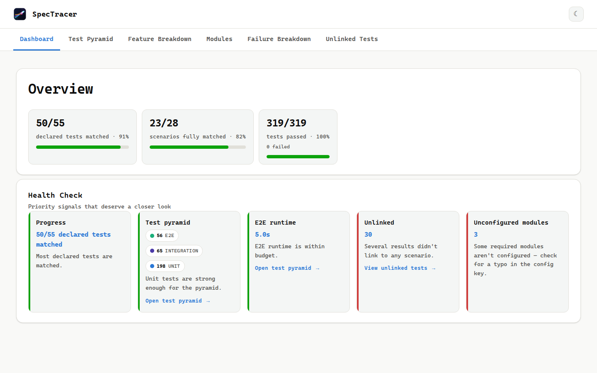
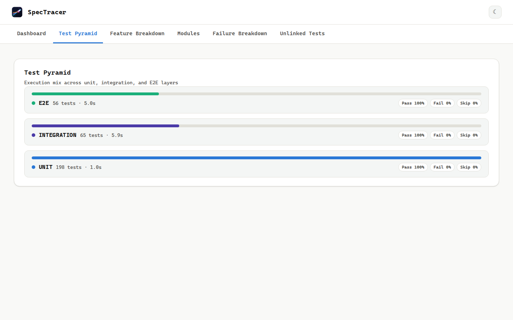
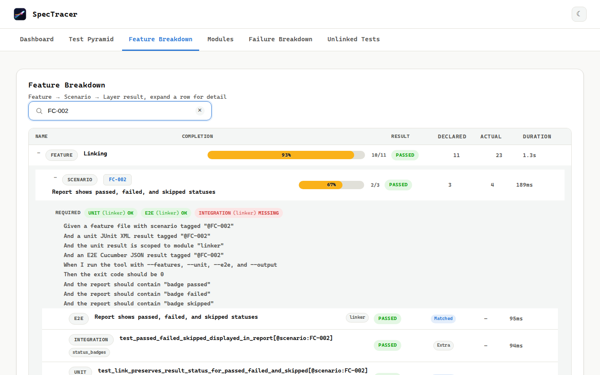

Features
SpecTracer generates a single HTML report with five interactive sections and intelligent health indicators. All CSS and JS are inlined (a CDN font loads with a system fallback) — the report is safe to email, archive, or publish as a CI artifact.
Coverage Progress Dashboard
The first thing visible in the report — designed for daily standup discussion. It answers the single most important question: what percentage of our scenarios actually have test coverage?

● Headline Metric
Tested: X / Y scenarios (Z%) — prominently displayed with color coding:
- Green above the configurable green threshold (default 80%)
- Amber between the amber and green thresholds
- Red below the amber threshold (default 50%)
A scenario counts as complete if at least one test result (across any layer) links to it.
☰ Per-Feature Breakdown
Each feature file gets its own mini progress bar with its own complete/incomplete count. This makes it easy to see which areas of the application are well-covered and which need attention.
⚙ Health Check Cards
Four health indicator cards sit below the progress bar. Each card shows its status (pass / warn / fail) at a glance with a colored left border.
Test Pyramid Dashboard
A 3-tier visualization of your test suite distribution. This is the fastest way to spot an inverted pyramid — where you have more E2E tests than unit tests.

▲ Per-Layer Metrics
| Metric | Unit | Integration | E2E |
|---|---|---|---|
| Test count | Individual test cases | Individual test cases | Scenarios |
| Duration | Total execution time | Total execution time | Total execution time |
| Pass / Fail / Skip | Percentages | Percentages | Percentages |
⚠ Health Indicators
- Speed Check: Flags if E2E takes too long (configurable: amber at 10 min, red at 30 min by default)
- Ratio Check: Flags if Unit test count ≤ Integration + E2E count (inverted pyramid)
Feature Traceability & Scenario Matrix
A searchable, sortable tree that shows every feature, every scenario, and every layer's test results:

☰ Tree View
Features are shown as collapsible rows. Expand a feature to see its scenarios and their required-layer status. Expand a scenario to see linked test results per layer with pass/fail/skip badges.
🔍 Search & Filter
A text input at the top of the matrix. Type a tag name or scenario name and the matrix filters to show only matching entries. Client-side JavaScript — no page reload needed.
⚙ Sortable Columns
Click any column header to sort by name, status, duration, or coverage. Click again to reverse the sort order.
▼ Expandable Layer Details
Click a layer pill to expand and see individual test names, their pass/fail/skip statuses, and expandable failure stack traces for any failed test.
Failure Breakdown
An accordion-style table listing every failed test across all layers. This is your single triage surface — no more switching between test reports.
⚠ What You See
| Column | Description |
|---|---|
| Layer | Which test layer (Unit, Integration, E2E) |
| Feature | Which feature file the scenario belongs to |
| Scenario | Which scenario the test links to |
| Test Name | The name of the individual test |
| Status | Pass / Fail / Skip |
| Duration | Test execution time |
Click any failed test to expand and see the full <failure> or <error> stack trace from the JUnit XML.
Unlinked Tests
Test results whose tags didn't match any scenario and carry an @FC-* tag end up here. Results without any @FC-* tag are silently excluded — the tool assumes non-@FC tags are generic (like @smoke or @regression) and not worth reporting as orphans.
This is invaluable for catching:
- Orphaned tests — tests that were written for a scenario that no longer exists
- Mis-tagged tests — tests with typos in their tags (
@FC-42vs@FC-43) - Coverage gaps — areas where test results exist but no feature file scenario describes them
| Column | Description |
|---|---|
| Layer | Which test layer produced the orphan |
| Test Name | The orphaned test's name |
| Tags Found | All tags on the test result |
| Status | Pass / Fail / Skip |
Machine-Readable JSON Report
Every section above is also available as structured JSON — set output_json in the config and SpecTracer writes a second file alongside the HTML report, built from the exact same internal data so the two can never disagree.
📄 Schema-Validated
Conforms to spectracer-report.schema.json (JSON Schema Draft 7), shipped in the repo as the authoritative contract. SpecTracer's own test suite validates its self-report against it on every run.
🔗 Same Data, No Drift
The JSON is built from the same coverage stats, pyramid metrics, and health checks that feed the HTML dashboard — not a second parallel implementation. If the HTML says 89%, the JSON says 89%.
✅ Use Cases
- PR bots — post a coverage delta comment without scraping HTML
- Custom CI gating — beyond
error_on_failure, script your own thresholds againstsummary.completionorsummary.health - Dashboards — feed coverage trends into an internal metrics system over time
Fully opt-in and backward compatible: omit output_json and nothing changes.
Health Checks
Four visual health indicators on the Dashboard section. They are purely visual — they never affect the exit code. Each card has a colored left border reflecting its status.
Progress
% of scenarios with at least one linked test. Pass/amber/fail thresholds configured via health_checks in config (defaults: green 80%, amber 50%).
Pyramid Ratio
Pass when Unit > I+E. Amber at exact parity (Unit = I+E). Fail when Unit < I+E (inverted pyramid).
End to end Runtime
Total E2E duration. Pass under amber threshold (default 10 min), amber between amber and red, fail over red threshold (default 30 min).
Unlinked Tests
Orphaned test results with @FC-* tags that didn't match any scenario. Pass at 0, warn at 1–3, fail at 4+.
Tag Linking System
The heart of SpecTracer. Feature files and test results connect through shared tags on scenarios.
Two Kinds of Tags
| Type | Examples | Purpose |
|---|---|---|
| Linking | @FC-42, @regression |
Shared with test results. Any matching tag links the test to the scenario. |
| Requirement | @require-unit, @require-integration, @require-e2e, and module forms like @require-e2e:checkout |
Declares which layers (and optionally which modules) must have coverage. Excluded from linking logic. |
Default Behavior
Scenarios without any @require-* tags default to @require-e2e — because if you wrote a Gherkin scenario but didn't declare requirements, it should at least have E2E coverage.
Module-Scoped Requirements
For teams with multi-module codebases, every layer supports optional module pinning: @require-unit:auth, @require-integration:billing, and @require-e2e:checkout. Config for unit, integration, and e2e uses the same shape — an object keyed by module name.
How It Works
In your config file:
{
"unit": {
"": ["./reports/unit.xml"],
"auth": ["./reports/auth-unit.xml"],
"billing": ["./reports/billing-unit.xml"]
},
"integration": {
"billing": ["./reports/billing-int.xml"]
},
"e2e": {
"": ["./reports/e2e.json"],
"checkout": ["./reports/checkout-e2e.json"]
}
}In your feature file:
@FC-42 @require-unit:auth @require-integration:billing @require-e2e:checkout
Scenario: Authenticated billing checkoutEach module-scoped requirement is only satisfied by a linked result registered under that exact module key. Unscoped results (config key "") never satisfy a module-scoped requirement. A bare @require-unit / @require-e2e (no module) is satisfied by any linked result for that layer.
In the HTML report, satisfied modules show as chips like e2e (checkout) OK; missing ones show Missing.
Edge Case Behavior
| Situation | Behavior |
|---|---|
| No config file found | Errors out — a config file is mandatory |
Missing features or output | Errors out — both are required |
| Empty/missing test result path | Silently ignored (zero tests for that layer) |
| Malformed XML or JSON | Aborts with a clear error message |
Test matches no scenario (with @FC-* tag) | Listed in "Unlinked Tests" |
Test matches no scenario (no @FC-* tag) | Silently excluded — only @FC-* orphans are reported |
| Scenario matches no test | Shown as "incomplete" |
@require-* with no matching test | Layer flagged as missing |
| Feature-level tags | Not inherited by scenarios |
| Tag collisions | Result links to ALL matching scenarios |
| Unicode / special characters | Preserved as-is (Jinja2 autoescape is off; scenario names and tags render raw) |